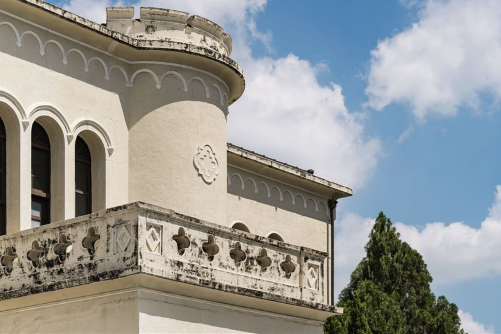
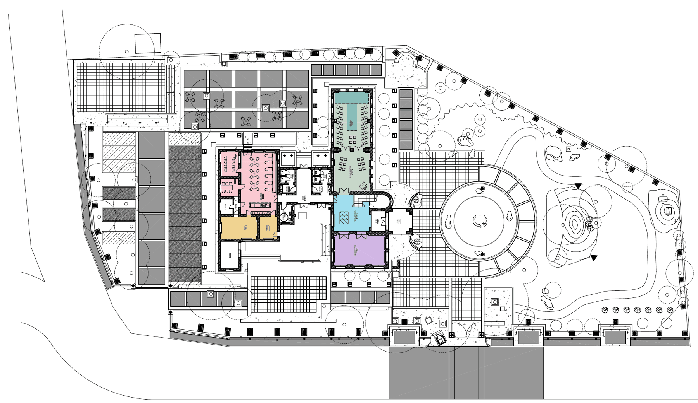

04 · 空間介紹
一樓聽音樂，二樓喝咖啡，
庭園裡吹晚風
Spaces & Floor Plans
主建築兩層樓，加上老榕樹環繞的綠意庭園。參觀或租借前，先用影片和平面圖認識它。
平面圖
三張圖，看懂整座放送局
點圖可放大。顏色對照右側空間說明。

全區配置 · 主建築＋東側庭園
主要空間

04 · 空間介紹
Spaces & Floor Plans
主建築兩層樓，加上老榕樹環繞的綠意庭園。參觀或租借前，先用影片和平面圖認識它。
平面圖
點圖可放大。顏色對照右側空間說明。

全區配置 · 主建築＋東側庭園
主要空間